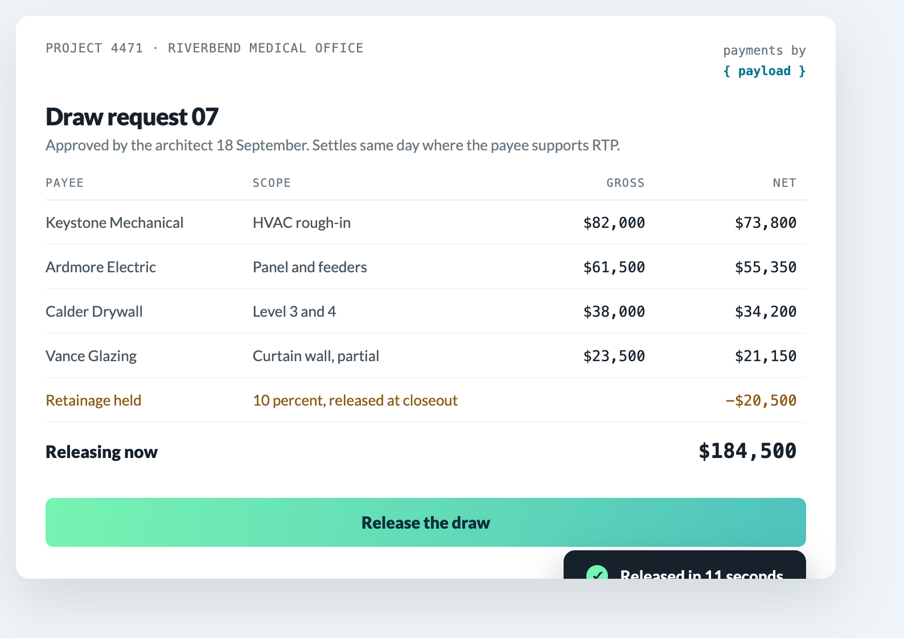
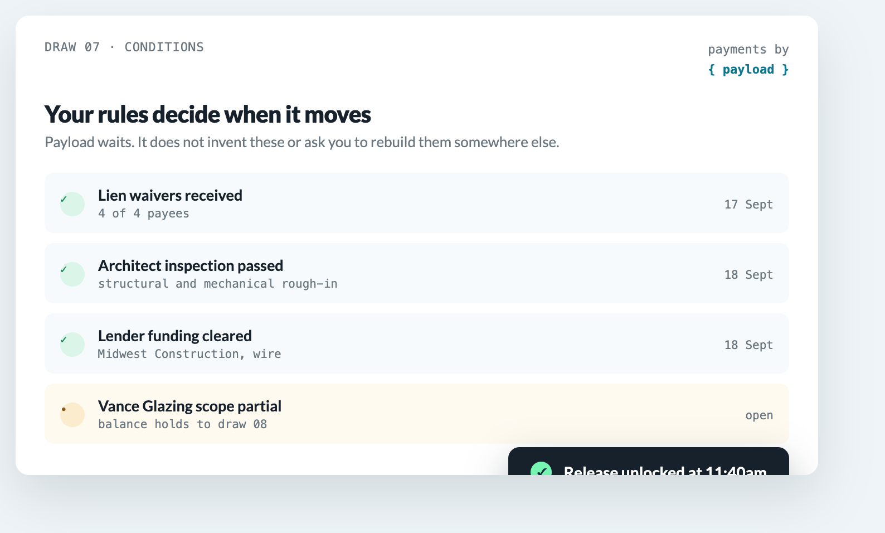
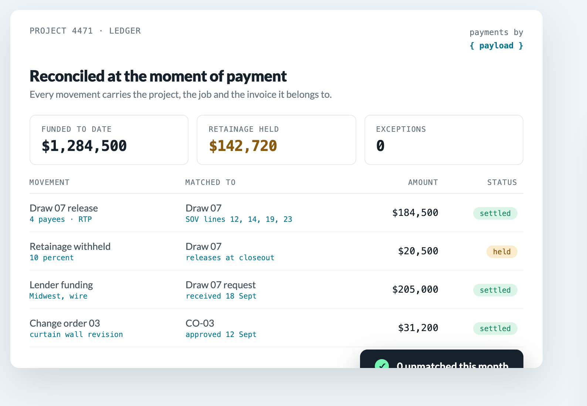
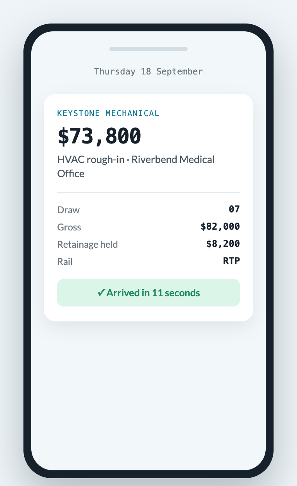

For construction management platforms
Your platform already runs the job.
The money should not leave to get paid.
Draws, retainage, lien waivers and subcontractor payouts, settled inside the product that already holds the project. Your approval rules decide when it moves.

Everything the payment needs, your platform already knows
And it currently sends all of it somewhere that knows none of it.
Progress payments and draws
Requested against the line items your platform already tracks, with the job attached.
Owner and lender funding
Released on inspection or milestone, by wire, RTP or ACH depending on who is sending it.
Subcontractor payouts
Same day where it matters, conditional on the lien waiver being on file.
Supplier and vendor payments
Any person or business, against the PO and the delivery your product already recorded.
Retainage
Withheld on a schedule, released on conditions, in the same ledger as everything else.
Change orders
A different amount against the same contract. Changing what is owed should not change how it moves.
Your rules decide when money moves
Payload does not invent your approval logic or ask you to rebuild it somewhere else. It waits for your platform to say yes.
- Lien waivers on file before a payee is eligible
- Inspection passed, milestone met, draw approved
- Retainage withheld on your schedule and released on your conditions
- A partial scope holds its balance to the next draw without holding the rest

Every dollar on the job, in one place
Draws in, retainage held, payouts out, fees attributed. Not three exports reconciled at month end.

- ACH
- RTP
- Wire
- Card
- Check
- Virtual card
Subcontractors hear it from you
Not from a bank they have never dealt with. The platform running their project is the one that tells them the money arrived.
- Same day where it matters, on the rail that suits each payee
- Gross, retainage and net shown against the scope
- Ten rails through one processing account, including RTP and FedNow
- Adding a rail later is a setting, not a project

What Payload runs on today
- $500M
- Moved every month, trending toward $6B a year
- 3M+
- Transactions processed without a fraud incident
- 15+
- Software platforms embedding Payload today
Two things this page cannot show you. Those figures are company wide, not construction specific. Payload's real estate page carries a wall of brokerage logos and another naming five real estate platforms it already connects to. Construction has neither, because there is no construction customer to name yet and no construction platform partner to list.
Putting real estate logos here would imply customers that do not exist, so the gap stays visible. It is also the argument for building this page early rather than a reason not to: the first construction platform to sign is worth more as the name in those two empty spaces than it is as volume.
Three ways to solve this
Only one of them is a decision you make once.
| Embed Payload | Build it yourself | Keep the bank portal | |
|---|---|---|---|
| Time to live | Weeks, and mostly your front end | Quarters. Onboarding, movement, reconciliation and a support view are four builds | Already live, and already the problem |
| Who holds the funds | Settled before you write code, with underwriting handled | You do, which means licensing, liability and an audit surface | The bank, outside anything you control |
| Approval rules | Yours, enforced in your product | Yours, and you maintain them forever | None. Approval happens in email |
| Reconciliation | At the moment of payment, against project, job and invoice | Possible, and the piece teams underestimate most | Afterwards, by hand |
| Revenue to you | Your rate, your fee structure, your call on who absorbs it | Highest margin, if you survive the build and the compliance | None. It is a cost line |
Building it yourself is a real option and for some platforms it is the right one. It is only worth it if payments become a product you sell rather than a feature you ship.
Questions a platform team asks first
Who holds the funds?
The question that decides your licensing, your liability and your audit surface, and the expensive one to change later. Settle it before any timeline estimate means anything.
Do we have to become a payment facilitator?
No. Processing accounts are created and underwritten through Payload with automated identity verification, so your platform onboards contractors without taking on facilitator status itself. A contractor who already has a Payload account connects rather than re-enrols.
How long does an integration actually take?
It depends on how much of the flow you want to own. Onboarding, the money movement, reconciliation and the support view are four separate pieces. That is what the conversation is for.
What about compliance?
PCI DSS Level 1 and SOC 2 Type 2, which are the two a procurement team asks for by name, with three million clean transactions behind them.
Can we set our own pricing?
Flat, percentage, tiered or hybrid, per method or per account. Absorb the fee, pass it to the payer, or split it. On a construction platform the answer is usually different for a card draw than for an ACH payout, and it can be.
The part you would otherwise build and then maintain
Money transmission is not a feature you ship once. It is a compliance surface you own forever.
Money transmission
Payload is the licensed party. Your platform moves money without becoming a transmitter.
KYC and KYB
Subcontractors and suppliers are verified through the flow, not through a separate portal you support.
PCI DSS Level 1, SOC 2 Type 2
Both published by Payload. Your auditors ask for the attestation, not for your controls.
Certifications as published by Payload. Confirm current scope with their team before relying on it.
Thirty minutes with a solutions engineer
Bring your real flows, inbound and outbound. We map them to the API and tell you what it takes to go live. Sandbox credentials the same day whether or not you move forward.